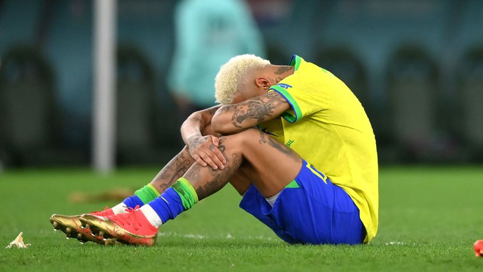
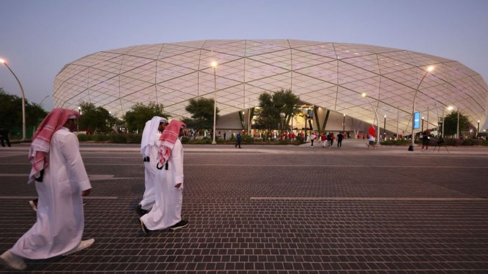
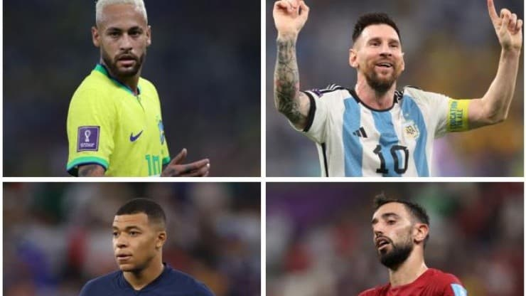
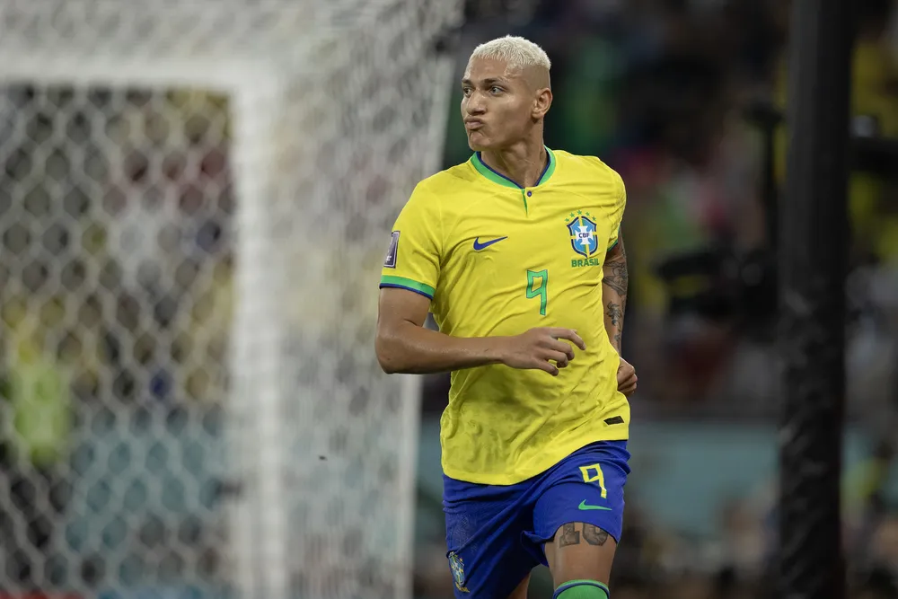
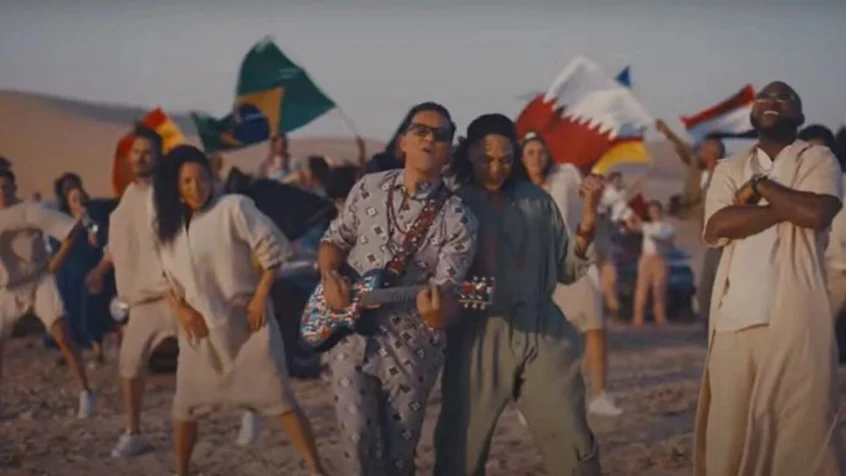
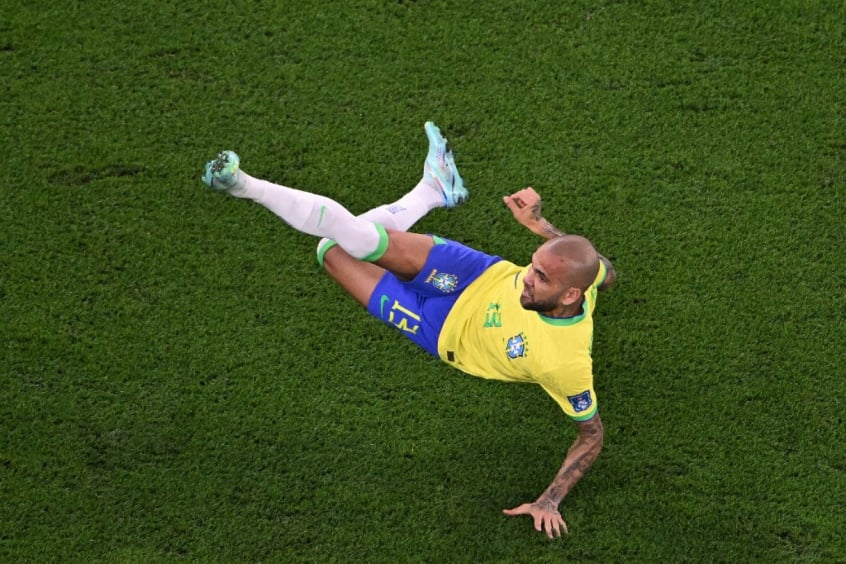
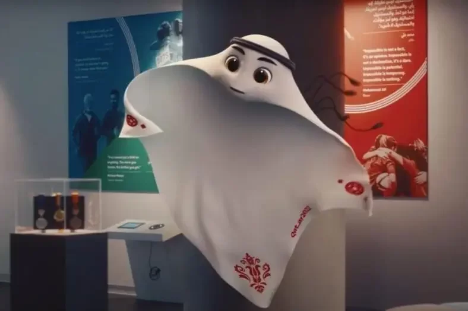

Neymar chora com eliminação do Brasil na Copa do Mundo

Após a eliminação do Brasil para a Croácia na Copa do Mundo, Neymar foi visto chorando em campo, nesta sexta-feira, 9.
A seleção europeia conseguiu arrancar o empate já na prorrogação e levou a melhor nas cobranças de pênaltis. Daniel Alves,
lateral da Canarinho, foi avistado consolando o craque após o confronto nas quartas de final.
materia completa : clique aqui
Copa do Mundo 2022: torneio dá prejuízo para os países-sede, diz estudo

Se as últimas 14 copas forem o parâmetro,
a resposta é não, segundo um estudo feito pelo pesquisadores Martin Müller, David Gogishvili e Sven Daniel Wolfe,
da Universidade de Lausanne, na França.
materia completa : clique aqui
A bola da Copa do Mundo do Catar 2022 usa inteligência artificial

A bola 'Al Rihla' contém uma Unidade de Medição Inercial (IMU, em inglês) em seu interior,
um sensor que ajuda a detectar posições ilegais quando a situação é duvidosa.
A IMU mede e informa a velocidade, orientação e forças gravitacionais de um dispositivo, usando uma combinação de acelerômetros e giroscópios.
materia completa : clique aqui
Brasil, França, Argentina...: Quem vai vencer a Copa do Mundo de 2022? Veja os prognósticos e palpites

A Copa do Mundo do Qatar vai chegando aos seus momentos decisivos. As quartas de final que acontecem na sexta-feira (09) e no sábado (10) vão movimentar o mundo inteiro.
Ainda na disputa, cinco seleções da Europa, duas do continente sul-americano e uma única representante da África ainda disputam o troféu mais cobiçado do mundo.
materia completa : clique aqui
Quem é o artilheiro da Copa do Mundo de 2022? Veja quem está na briga pela chuteira de ouro

A disputa pelo posto de artilheiro da Copa do Mundo de 2022 ainda está aberta.
Kylian Mbappé, da França, lidera a lista com 5 gols, mas é seguido de perto por uma extensa lista de pretendentes.
Na cola do francês com 3 gols marcados estão: Richarlison, do Brasil, Saka e Rashford, da Inglaterra, Giroud, da França, Messi, da Argentina, Gakpo, da Holanda e Gonçalo Ramos, de Portugal.
materia completa : clique aqui
Músicas da Copa do Mundo 2022: conheça trilha sonora do Mundial

O primeiro sucesso lançado, em abril deste ano, foi “Hayya Hayya (Better Together)”, com os artistas Trinidad Cardona, Davido e Aisha.
Apesar de a Fifa não ter estabelecido uma música oficial do torneio, esta se tornou a mais conhecida.
materia completa : clique aqui
Recordes na Copa do Mundo 2022: veja 10 marcas alcançadas no Qatar

A história está sendo escrita no Qatar. Como em toda edição, a Copa do Mundo 2022 se tornou palco de recordes quebrados e marcas inéditas alcançadas.
Abaixo, apresentamos os principais recordes batidos até o momento.
materia completa : clique aqui
Copa do Mundo 2022: conheça todos os mascotes das Copas do Mundo

De acordo com a organização, o nome significa “jogador super-habilidoso” em árabe. Com a forma inspirada no Keffiyeh, lenço para cabeça característico do Catar,
a animação mantém a tradição de incluir elementos regionais dos países-sede nos personagens.
materia completa : clique aqui